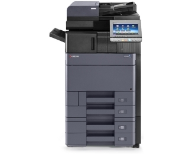

BIROOPREMA ĐORĐEVIĆ

KYOCERA TASKalfa 4002i Laser
|

|
||
| Štampa | Tip | Multifunkcijski laser |
| Boja | Monohromatski | |
| Funkcionalnost | 3-u-1: štampač, skener, kopir | |
| Format | A3 | |
| Sistem štampe | KYOCERA HyPAS™, KYOCERA Laser | |
| Rezolucija štampe | 4.800 x 1.200 dpi | |
| Duplex štampa | Da | |
| ADF | Da | |
| Brzina monohromatske štampe | 25ppm (A4), 13ppm (A3) | |
| Brzina štampe u boji | 40ppm (A4), 20ppm (A3) | |
| Vreme štampe prve strane | 4.5 sekundi | |
| Skeniranje | Rezolucija skeniranja | 600 x 600 dpi |
| Brzina skeniranja monohromatski (crno-belo) | 180ipm (300dpi, A4) | |
| Brzina skeniranja u boji | 180ipm (300dpi, A4) | |
| Podržani profili | WSD, Network TWAIN | |
| Podržani formati skeniranja | TIFF, PDF, JPEG, XPS | |
| Kopiranje | Dodatne opcije | Scan-once-copy-many, Elektronsko sortiranje, 25% - 400% umanjenje - uveličavanje |
| Povezivost | Povezivost | LAN (mrežni), USB |
| Dodatni priključci / Slotovi | 4x USB 2.0 (tip A) Host - za povezivanje USB fleš diskova | |
| Ostale osobine | USB 2.0 priključak, 10/100/1.000Mbps Ethernet protok | |
| Potrošni materijal | Kapacitet regularnog tonera | 35.000 strana |
| Toner | TK-6325 | |
| Ostalo | Displej | 9" LCD u boji |
| Procesor | Freescale T1024, Dual Core, 1.2GHz | |
| Memorija | 320GB hard disk, 8GB SSD, 4096MB | |
| Emulacije | PCL6, PostScript 3 (KPDL 3), XPS Direct Print, PDF Direct Print | |
| Kapacitet fioke | 1.000 listova (maksimalni kapacitet: 7.150 listova), 150 listova (multipurpose tray) | |
| Podržana debljina papira | 52g/m2 - 300g/m2 | |
| Podržane tehnologije | HyPAS™ | |
| Nivo buke | 51.2dB(A) | |
| Opciona oprema | Platen Cover (Type E), DP-7100 (Document processor - 140 strana), DP-7110 (Document processor - 270 strana) | |
| Fizičke karakteristike | Dimenzije | 790mm x 665mm x 602mm |
| Masa | 83kg | |
| Boja | Crna | |
| Garancija | Garancija | 2 godine |